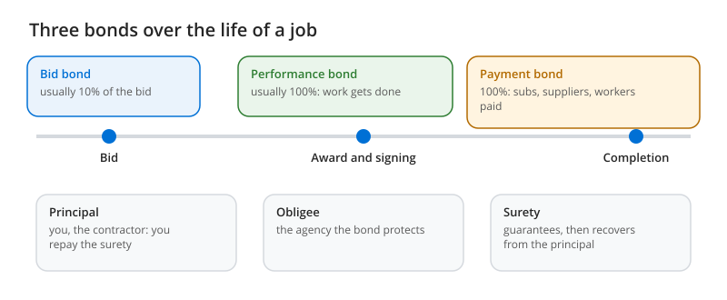

Surety bonding and bonding capacity
In one sentence: a bond is the surety's promise to the agency that you will do what you said, and your bonding capacity, not your ambition, decides how big a job you can bid.

A bond is not insurance
A bond has three parties: you (the principal), the agency (the obligee) and the surety. If the surety pays a claim, it comes back to you for the money, usually through the indemnity agreement the company owners signed. Insurance protects you; a bond protects the agency and the people you owe.
The three bonds you'll meet
- Bid bond: guarantees you'll sign the contract and provide the other bonds if you're the winning bidder. Usually 10% of the bid. See Bid security: bid bonds and other forms.
- Performance bond: guarantees the work gets done, usually 100% of the contract price.
- Payment bond: guarantees your subs, suppliers and workers get paid, 100% of the contract price, required on public works over $25,000. See Payment and performance bonds.
What a surety looks at
- Character: history, references, how claims were handled.
- Capacity: experience with work of this kind and size, key people, equipment.
- Capital: financial statements (reviewed or audited for larger programs), working capital, net worth, bank line.
From this the surety sets two limits: a single-job limit and an aggregate limit (all bonded work on hand, usually measured on the uncompleted portion).
The cost
Premium is a percentage of the contract amount, on a sliding scale that gets cheaper per dollar for larger contracts and stronger contractors. Bid bonds are usually free to good clients; the premium comes with the performance and payment bonds after award. Change orders that raise the contract usually raise the premium too.
Small contractors
If you're new, look for a surety agent who works with small contractors. California also has programs that help small and disadvantaged firms qualify for bonds. Start the relationship months before the bid you care about.
Common mistakes / what agencies actually check
- Bidding a job that would exceed the aggregate limit, then finding out after award.
- Financial statements that arrive late or don't separate job profit clearly.
- Owners signing the indemnity agreement without reading it.